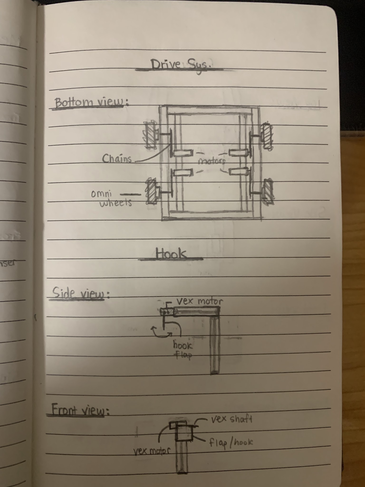
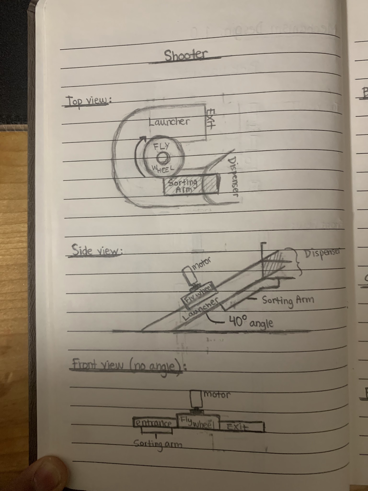
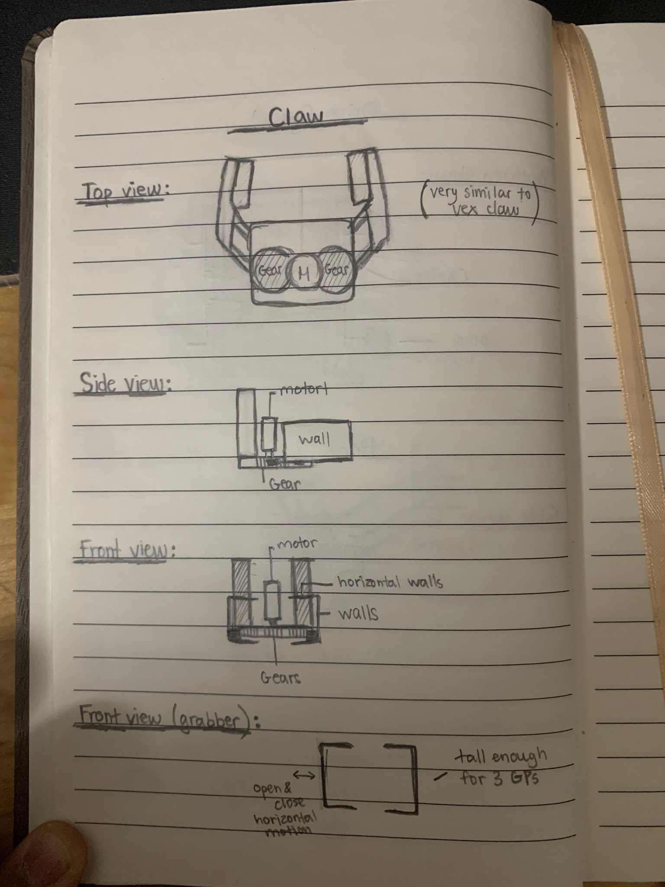
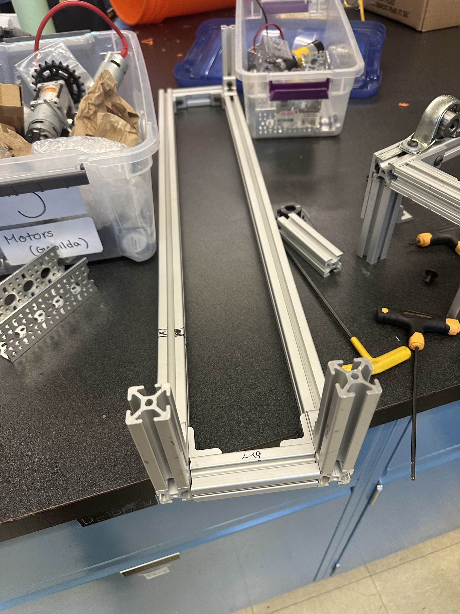
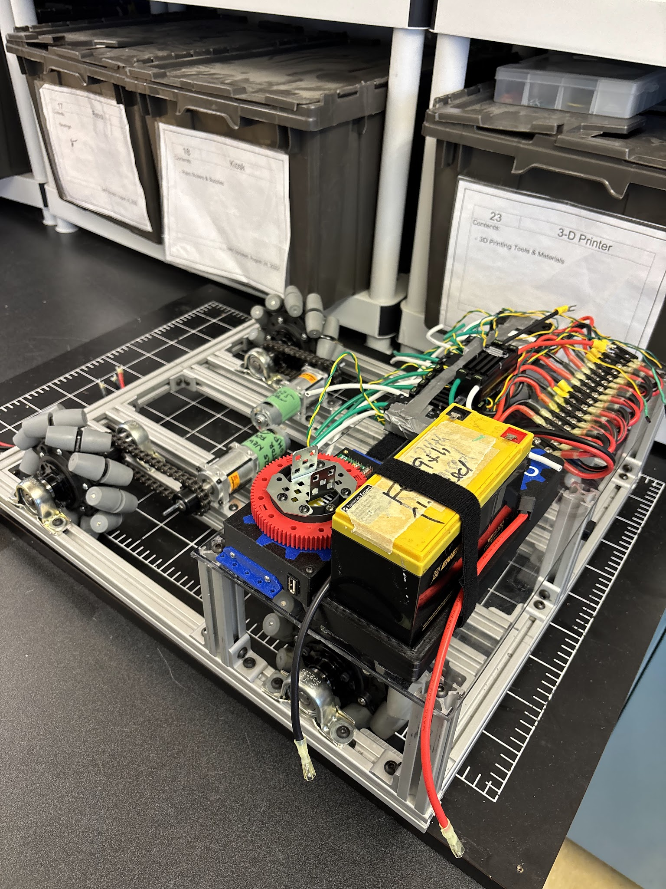
Construction de la base et Ajout des moteurs Rive
Problème des moteurs BaneBot
Notre premier obstacle était le montage et l'emplacement de nos moteurs BaneBot pour le système d'entraînement en raison des dimensions réduites du robot par rapport aux années précédentes, puisque chaque moteur prendrait trop de place pour un système de propulsion direct. Notre idée initiale était d'essayer d'étendre la base aux dimensions maximales possibles pour le robot, mais cela n'a pas suffi à résoudre le problème. Nous avons alors eu l'idée de déplacer le moteur le long du châssis et d'utiliser un système de propulsion par chaîne pour conserver la même puissance et la même vitesse qu'un système à propulsion direct.
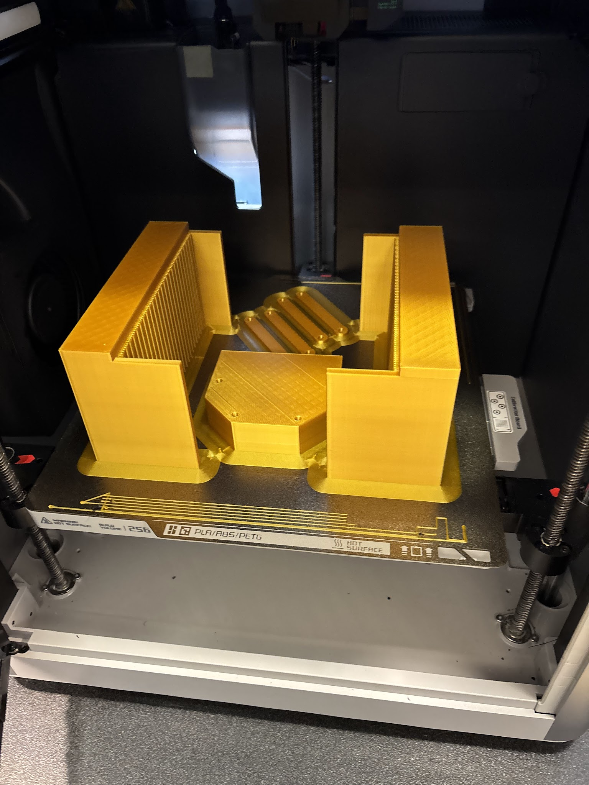
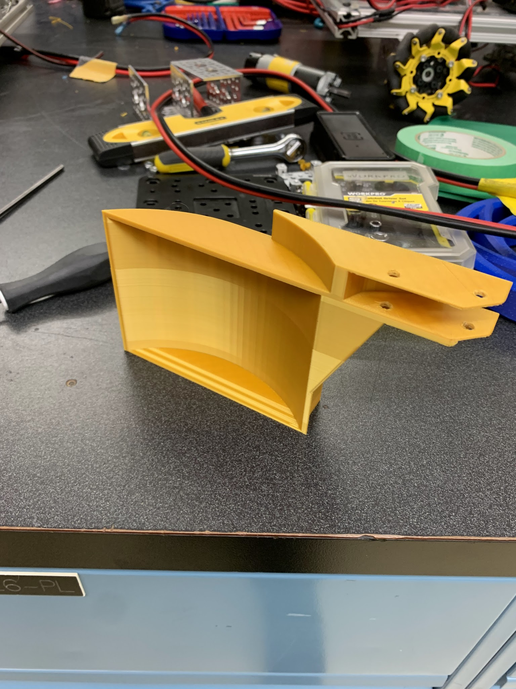
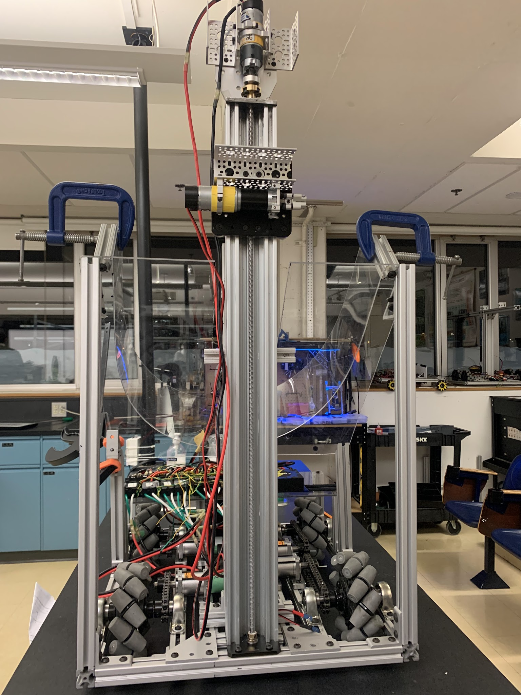
Construction du système de rammasage et de pince
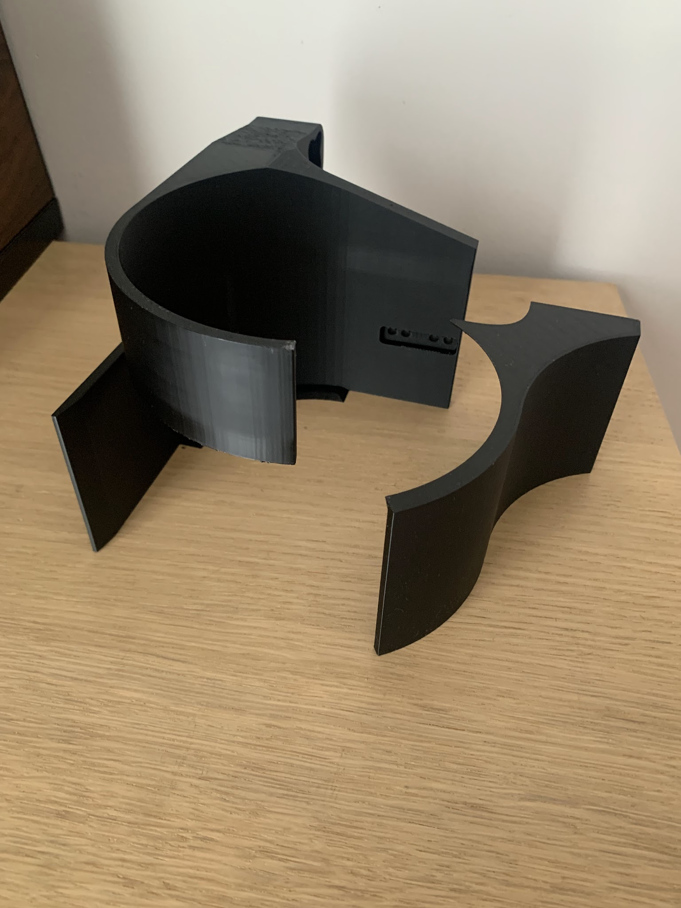
Problème du mécanisme de la pince
Le mécanisme des pinces nous a posé un autre problème, nous avons commencé avec l'idée d'utiliser un système très similaire à celui du vex pro claw mais avec des pièces imprimées en 3D et des accessoires personnalisés pour le faire fonctionner pour nous. Malgré les multiples prototypes, on ne pouvait pas trouver une manière pratique pour incorporer toutes les fonctions qu'on voulait. Nous avons alors décidé de passer à un système plus simple mais pratique, l'étagère et la crémaillère, et avec un peu de temps, nous avons pu trouver une bonne pince conçue en 3D qui répondrait à tous nos besoins.
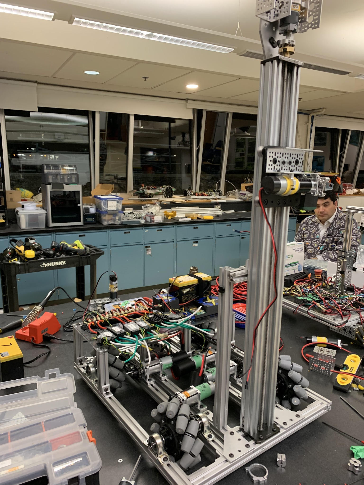
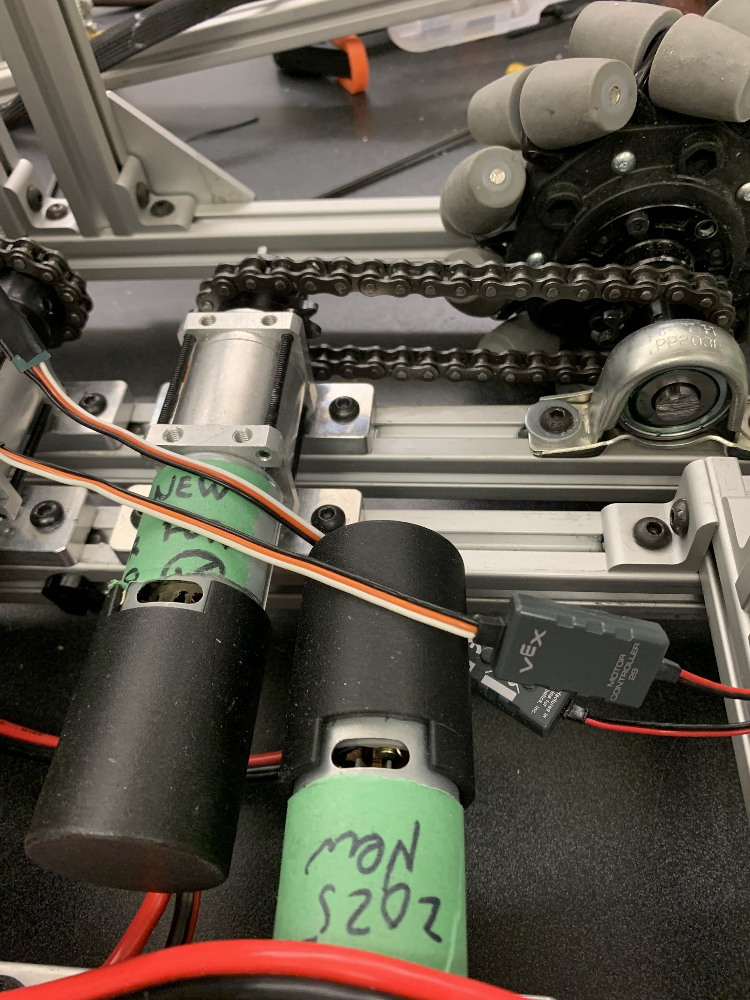
Essais et conduite

Un autre problème avec BaneBot
Le système de commande BaneBot présentait au début plusieurs problèmes, tels que le délai de réponse, la réponse à certains codes et également les chutes de tension. Pour résoudre ce problème, nous avons suivi de nombreuses étapes. Notre première étape a été de refaire tout le câblage connecté aux moteurs, y compris les régulateurs de vitesse, afin d'exclure tout problème de câblage. Nous avons ensuite mis à jour et modifié le code à plusieurs reprises, sans toujours résoudre notre problème à 100 %. Enfin, nous avons essayé de connecter toutes les broches du moteur à un nœud de notre bornier, réduisant ainsi le décalage et le retard, mais ne résolvant pas complètement le problème. Finalement, nous avons décidé de passer au mécanisme d'engrenage conique à veste jaune Gobilda pour des raisons de fiabilité et le manque de solutions pour notre BaneBot. système d’entraînement. Au final, le système gobilda s'avère bien meilleur que le système BaneBot que nous avions imaginé.
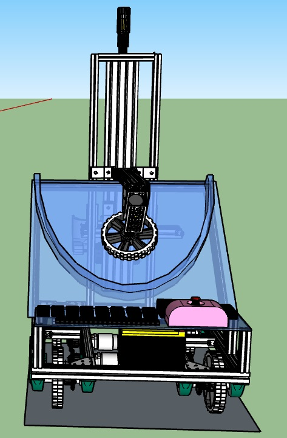
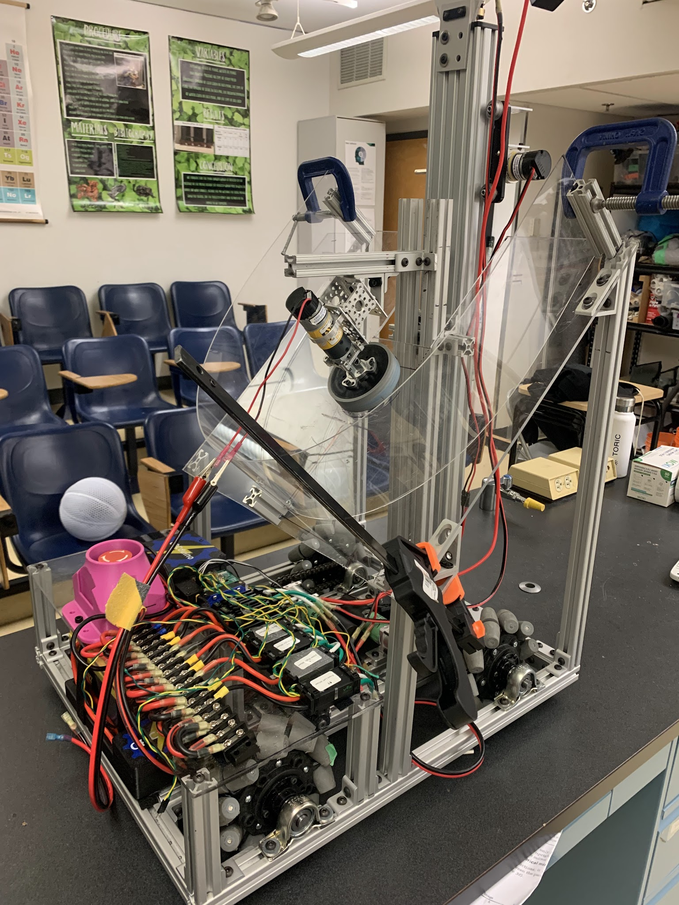
Système de lancement

Problème de mécanisme de lancement
Le mécanisme de lancement qui a été conçu au départ présentait quelques problèmes, tels que la sous-performance du volant d'inertie car il était en contact avec le plexiglas situé en dessous. De plus, installer un mur en demi-cercle parfait pour la caméra du lanceur avec ses difficultés. Nous avons pu installer un mur en plexiglas fonctionnel après 2 essais différents. Quant au problème du volant d'inertie, nous avons modifié la méthode de montage afin qu'il soit plus solide et crée moins de vibrations à travers le robot. Enfin, l'effet d'aspiration que le volant à haut régime provoquerait contre le volant a été simplement résolu en découpant un trou de la taille du volant juste sous sa position de montage d'origine.